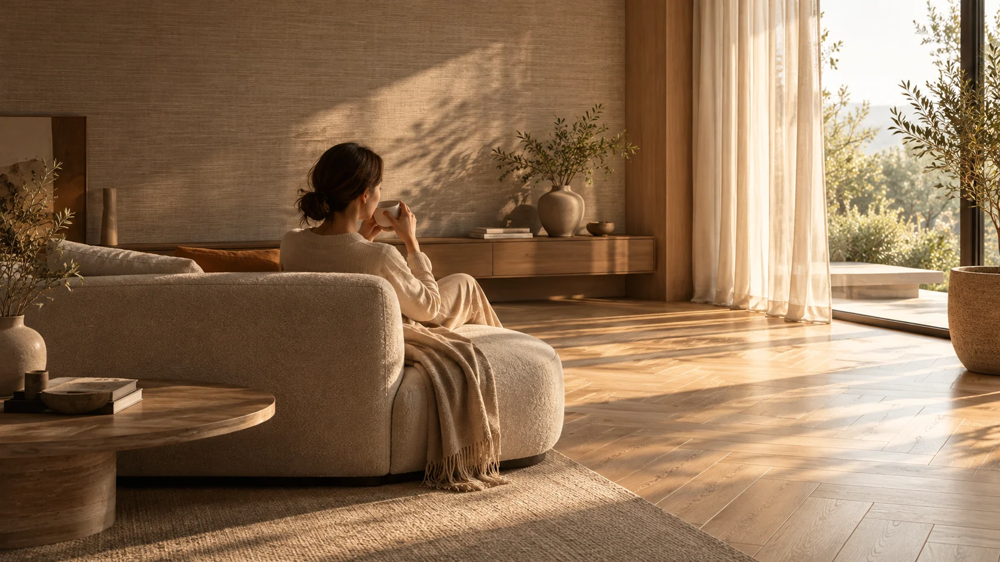

พื้น SPC คืออะไร? รู้จักพื้นคลิกล็อกก่อนเลือกติดตั้ง
SPC เป็นหนึ่งในทางเลือกสำหรับงานพื้นภายในที่ต้องการลุคเรียบร้อยและดูแลรักษาสะดวก แต่ก่อนเลือกควรตรวจพื้นเดิมและเงื่อนไขของแต่ละรุ่น
อ่านบทความ ↗แรงบันดาลใจ ความรู้เรื่องวอลเปเปอร์และพื้น พร้อมคำแนะนำที่ช่วยให้คุณตกแต่งบ้านได้มั่นใจขึ้น

มองข้อแตกต่างด้านความสวยงาม ผิวสัมผัส การดูแล สภาพผนัง และขั้นตอนติดตั้งก่อนเลือกวัสดุตกแต่งบ้าน
อ่านบทความ วอลเปเปอร์ภาพพิมพ์
วอลเปเปอร์ภาพพิมพ์ขั้นตอนเลือกไฟล์ภาพ เนื้อวัสดุ และการเตรียมผนังก่อนสั่งพิมพ์
อ่านบทความ การดูแลวอลเปเปอร์
การดูแลวอลเปเปอร์แนวทางประเมินความเสียหายและการซ่อมด้วยวอลเปเปอร์ลายเดิม
อ่านบทความเนื้อหาเปรียบเทียบวัสดุและการดูแลพื้นจะเพิ่มหลังตรวจสอบรายละเอียดและข้อมูลผลิตภัณฑ์ ไม่ใส่ข้ออ้างด้านคุณสมบัติที่ยังไม่มีหลักฐาน
เรื่องที่ควรรู้ก่อนเลือกพื้นให้เหมาะกับพื้นที่ของคุณ

SPC เป็นหนึ่งในทางเลือกสำหรับงานพื้นภายในที่ต้องการลุคเรียบร้อยและดูแลรักษาสะดวก แต่ก่อนเลือกควรตรวจพื้นเดิมและเงื่อนไขของแต่ละรุ่น
อ่านบทความ ↗
เปรียบเทียบแนวคิดพื้น LVT Glue-Down และ SPC Click-Lock ก่อนวางแผนงานติดตั้ง พร้อมข้อควรระวังเรื่องพื้นเดิม
อ่านบทความ ↗ความรู้เบื้องต้นก่อนเลือกพรม: สไตล์การตกแต่ง การใช้งาน วิธีดูแล และการเตรียมพื้น
อ่านบทความ ↗